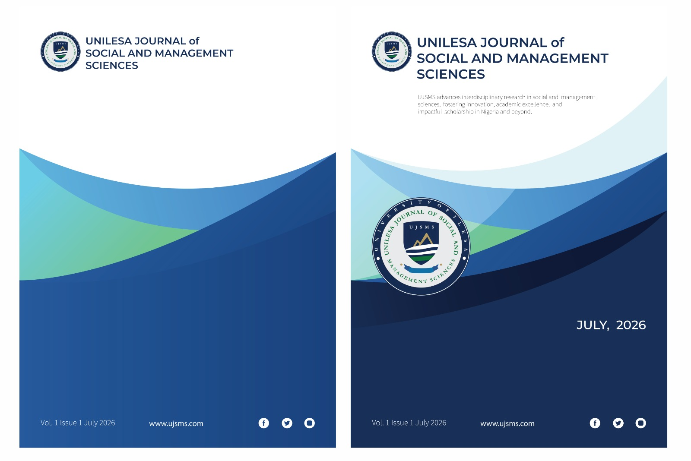

Now Accepting Submissions · Vol. 1, Issue 1
UNILESA Journal of
Social & Management
Sciences
A premier peer-reviewed academic journal advancing interdisciplinary research in social and management sciences. Fostering innovation, academic excellence, and impactful scholarship in Nigeria and beyond.
0
Articles Published
0
Contributing Authors
0
Issues Published

July 2026
LATEST ISSUE
Vol. 1 · Issue 1
PEER REVIEWED
Double-Blind
0
Total Articles
0
Authors Worldwide
0
Issues Published
0
Editorial Members
Featured Research
Featured Articles
Explore highlighted scholarly works selected by our editorial team for their impact, rigor, and contribution to the field.
News & Updates
Announcements
Stay informed about calls for papers, submission deadlines, and upcoming journal events.
Call for Papers
Ready to Share Your Research?
UJSMS welcomes original research articles, review papers, and case studies in social and management sciences. Our rigorous double-blind peer review ensures the highest scholarly standards.
Recent Publications
Latest Articles
The most recently published research across all areas of social and management sciences.